Agentic checks your data, recharges your number, explains your bill and fixes your network, inside one conversation.
Say it the way you’d say it.
“Kitna data bacha hai?” is enough. People type or speak in English or Hinglish, and the assistant works out the task.
Answers you can act on.
Numbers come back as cards from the app’s own design system, with the next action inside the answer.
Nothing moves without you.
Every payment opens a confirm sheet in the chat. The agent suggests; the person decides.
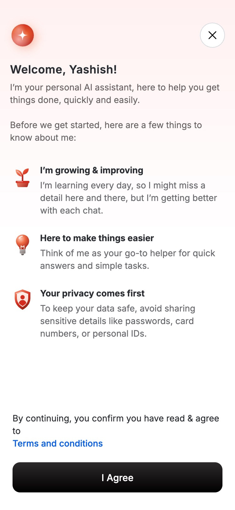
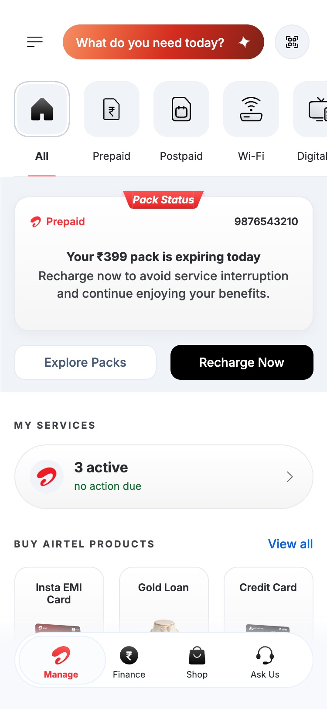
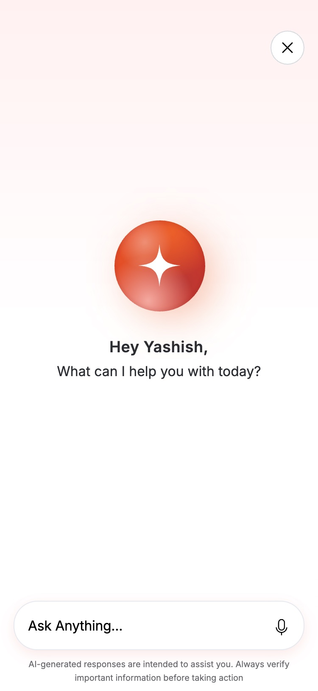
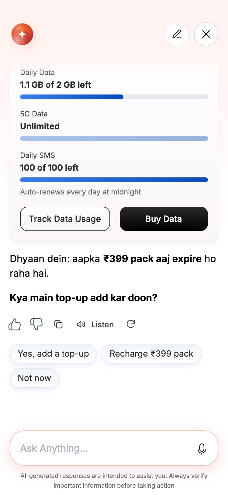
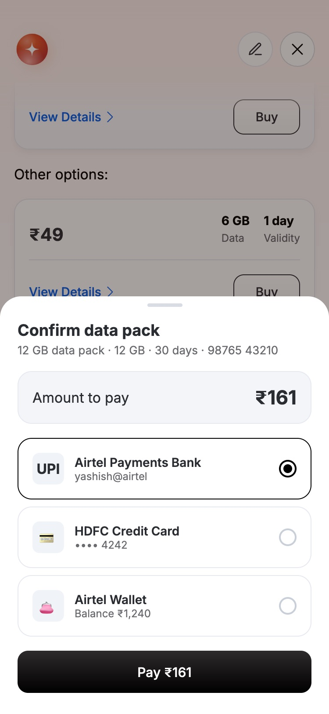
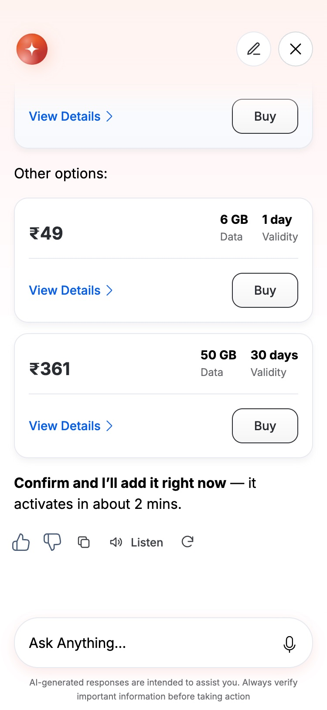
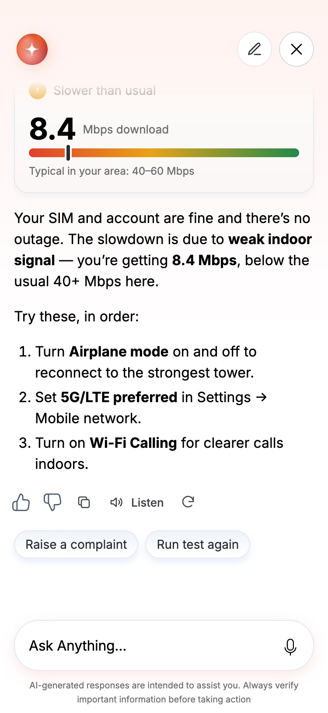
Starts from the home screen
A pill in the header cycles real asks, so people learn what it can do before they tap.
One-time ground rules
A short first run sets expectations and covers consent.
Hinglish and voice
Type or talk; a live transcript catches mis-hears.
Usage, packs, plans, bills
Each answer renders as a card with its button inside.
One pick, explained
A best-match pack with the reason, alternatives below.
Shows its work
The thinking state names real steps while it fetches.
Confirm in the chat
Amount, item, number and method, then a separate Pay tap.
App-grade actions
Black CTAs and familiar cards make paying feel as safe as before.
Escalates with context
When it can’t fix something, the ticket arrives pre-filled.
Designing an AI layer that finishes tasks for 300 Mn Airtel users.
People open the Airtel app to do one thing: check data, recharge, pay a bill, fix the internet. The app made them search menus to do it, and many gave up and called customer care.
Instead of improving the menus, I proposed Agentic: a conversation that understands what people want and does it, inside the chat.
My role
Lead Product Designer. Led design end to end.
Team
Product, Engineering, Data
Scope
0→1 conversational layer
Goal
Fewer digital-to-assisted hand-offs
The current navigation falls short
Traditional navigation assumes people explore. In a telco app they don’t browse, they act. Yet a person with a clear goal still has to:
01
Search through menus to find the right entry point
02
Complete several steps for a simple task
03
Move to a call centre or store when the path isn’t clear
04
Each hand-off to a human raises operating costs
Today 7
Open the app
Find “Prepaid”
Look for usage
Go back, open “Packs”
Compare data packs
Open details
Pay
With Agentic 3
“Kitna data bacha hai?”
See usage and one best-match pack
Confirm and pay in the chat
Steps to add a data top-up, walked through in the current app and in the prototype.
The opportunity
Let intent drive the experience. Instead of making people navigate, let them say what they want, and let the system do it.
How might we design a trustworthy conversation that helps Airtel users finish tasks instantly by saying what they want, instead of navigating flows?
Learning from conversational AI
I studied ChatGPT, Gemini, Copilot, Perplexity, Arc and Grok on the same tasks. Six patterns kept repeating, and each one shaped a part of Agentic.
Pattern
How it shows up in Agentic
Guided starters
The home pill rotates real asks, so people learn what it can do before they tap.
Keep the conversation going
Every answer ends with one to three follow-ups tied to the task.
Quiet UI, one accent
The red-brown accent is used only for the AI: the pill, the orb, the voice.
Inline action controls
Thumbs, copy, read-aloud and regenerate sit under every answer.
Structured widgets
Usage, packs, plans, bills and network checks render as cards with actions.
Trust signals
The thinking state names real steps, and anything that costs money asks first.
From patterns to principles
01
You stay in control
The agent assists, but never takes an irreversible step without consent.
02
Assist when it matters
It stays out of the way until it can genuinely help.
03
Transparent and trustworthy
Recommendations are explainable and the work is visible.
04
Fail gracefully
When unsure, it asks, suggests or escalates. It never bluffs.
Key design decisions
What I chose, why, and the trade-off I accepted.
01
The entry sits where intent forms: the header
Decision
A pill in the top bar that cycles real requests, instead of a floating button or a new tab.
Why
People decide what they came for at the top of the screen. A rotating prompt teaches what the assistant can do without a tutorial.
Trade-off
It takes the search slot. Search stays reachable inside the conversation.
02
Agree on the rules before the first answer
Decision
A one-screen first run: what it is good at, that it is still learning, and what never to share.
Why
Setting expectations early lowers the cost of a wrong answer later, and covers consent for account access.
Trade-off
One extra tap, shown only once.
03
Show the work while it thinks
Decision
A small orb spins while the status line names real steps: “Checking current usage…”, “Reading today’s data meter…”.
Why
A spinner says “wait”. A named step says “I’m doing what you asked”, which makes the wait feel shorter.
Trade-off
Steps must match what the backend really does. Engineering agreed to send real stage events.
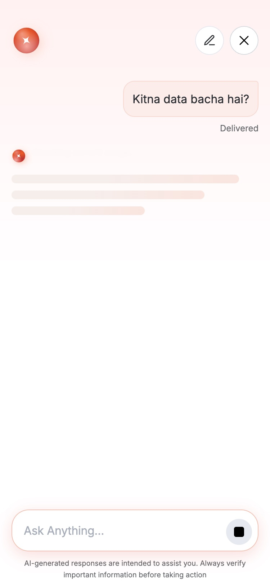
04
Answers are cards, not paragraphs
Decision
Anything with numbers renders as a card from the app’s design system, with its action inside.
Why
A usage bar reads faster than a sentence, and a button inside the answer turns reading into doing.
Trade-off
Less freedom than free text. Every card keeps a short sentence above it so it reads well aloud.
05
Recommend one, and say why
Decision
One “Best match” pack with a reason, and two alternatives below it.
Why
A wall of packs is the old app again. One explained pick reads as advice, not a sales pitch.
Trade-off
The pick follows usage, not margin; the premium pack appears as an alternative.
06
Money never moves without a confirm
Decision
Every purchase opens a sheet with amount, item, number and payment method. Pay is a separate tap.
Why
An agent that can spend is only trusted if it always asks. The sheet keeps people in the chat.
Trade-off
One more tap than one-click buying.
07
Diagnose first, escalate with context
Decision
“My internet is slow” runs a visible check, explains the cause, lists fixes, then offers a complaint with the details attached.
Why
Many issues can be fixed by the person in a minute. When they can’t, the ticket arrives pre-filled.
Trade-off
The check takes about three seconds.
08
Voice lives in the composer
Decision
The mic turns the composer into a waveform with a live transcript, then “Transcribing…”, then it sends.
Why
A full-screen voice mode is a context switch. The live transcript lets people catch mis-hears. Hinglish works too.
Trade-off
Less room for visuals. A full voice mode is still one tap away.
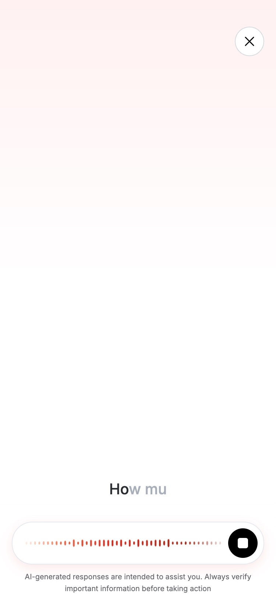
09
Two tones: the AI is red-brown, actions are the app
Decision
The accent marks the AI. Buttons and cards inside answers keep the app’s black CTAs and blue links.
Why
The AI should feel new, but paying a bill should feel exactly as safe as it always did.
Trade-off
Two palettes need rules. I documented where the accent is allowed.
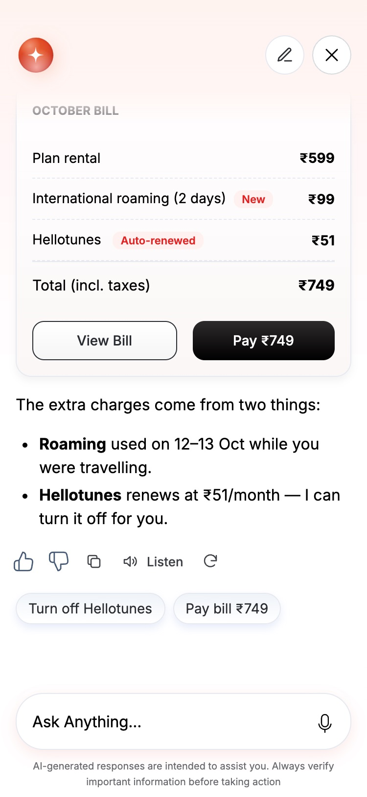
10
When it can’t help, say what it can do
Decision
Out-of-scope requests get an honest “I’m still learning that” and a list of what it can do now.
Why
A confident wrong answer loses trust fastest. An honest limit plus a next step keeps people moving.
Trade-off
It admits limits openly, by design.
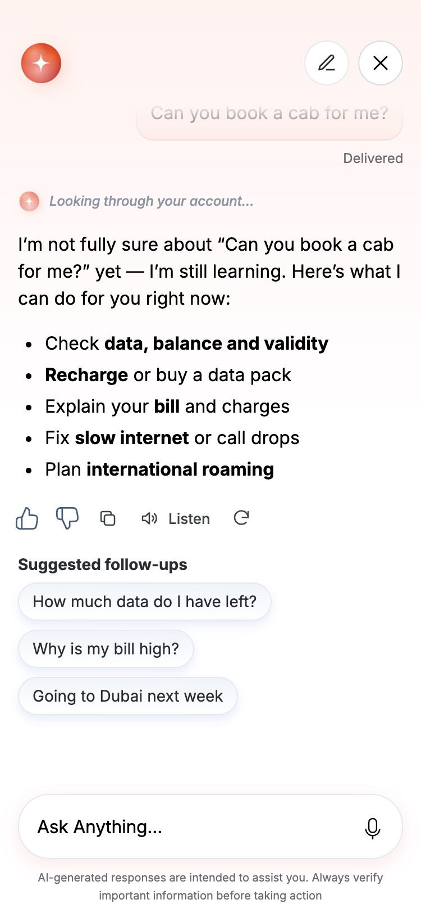
Conversation model
One Experience Agent owns the conversation. Specialised agents do the work through structured instructions and guardrails.
InUser→Guardrails→Experience Agent
BuyBuy Agent→Customer data→Feasibility→Lead agent
ServeServe Agent→Customer data→Diagnostics→Resolved?→Answer or ticket
OutStructured output→Guardrails→User
Conversation capabilities
Stage
What the assistant can do
Initiation
Conversation starters, contextual nudges, free-text input, prompts from account context
Trust
“Thinking…” state with real steps, visible reasoning, sources, progress
Continuation
Text and voice replies, interactive widgets, structured cards
This is the working prototype. Pick a scenario, or tap the red pill and type your own question in English or Hinglish.
What I learned
The most valuable outcome wasn’t only the assistant, it was the clarity we created along the way. In a space full of ambiguity, design set the vision, aligned stakeholders, and turned a broad AI ambition into something the team could build.
Prototype the feeling early. A working prototype settled debates about pace and trust that static frames couldn’t.
Design the system, not the screen. Agreeing on the conversation model decided half the UI.
Trust is a budget. Surprises spend it; confirms, honest limits and visible work refill it.
How we measure it
Task completion rate inside the chat
Digital-to-assisted hand-offs per 1,000 sessions
Fallback rate, and recovery after a fallback
Answer feedback and post-chat rating
Thanks for reading
The best way to judge this work is to use it. The prototype runs full screen on a phone.